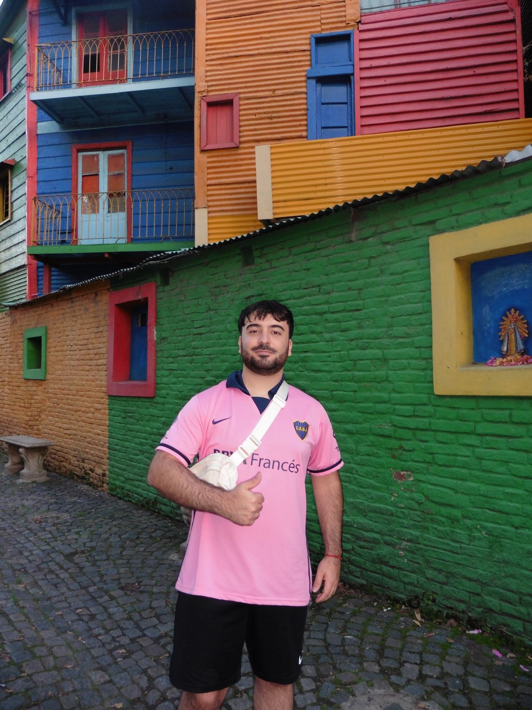

Conocé a nuestros integrantes
Ricardo Lora Sitio Personal
Experto en diseño UX/UI y Estudiante Universitario de la Carrera Gestión en Tecnología de la Información
Ignacio Lopez Sitio Personal

Experto en Consultoría y Transformación Digital y Estudiante Universitario de la Carrera Gestión en Tecnología de la Información
Macarena Calderon Sitio Personal
Experta en Seguridad Web y Negocios Digitales y Estudiante Universitaria de la Carrera Gestión en Tecnología de la Información
Benicio Gerez Bender Sitio Personal
Experto en Mantenimiento y Soporte Técnico de Sistemas y Estudiante Universitario de la carrera Gestión en Tecnología de la Información